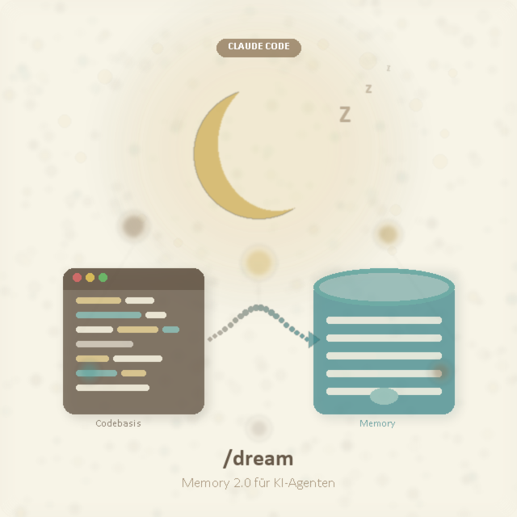

Claude Code /dream: Memory 2.0 – Wie KI-Agenten im Schlaf dazulernen
Claude Code /dream: Memory 2.0 – How AI Agents Learn While You Sleep

Stellen Sie sich vor, Ihr KI-Agent analysiert Ihre gesamte Codebasis über Nacht – autonom, im Hintergrund – und hat am Morgen ein tiefes Verständnis Ihres Projekts aufgebaut. Imagine your AI agent analyzes your entire codebase overnight – autonomously, in the background – and has built a deep understanding of your project by morning.
Genau das leistet das /dream-Feature in Claude Code. Es ist Anthropics Antwort auf eines der hartnäckigsten Probleme beim Arbeiten mit KI-Agenten: den Kontextverlust zwischen Sessions. Und es verändert grundlegend, wie wir mit Coding-Agenten arbeiten.
That's exactly what the /dream feature in Claude Code does. It's Anthropic's answer to one of the most persistent problems when working with AI agents: losing context between sessions. And it fundamentally changes how we work with coding agents.
Das Problem: Jede Session startet bei NullThe Problem: Every Session Starts From Scratch
Wenn Sie regelmäßig mit Claude Code, GitHub Copilot oder anderen KI-Coding-Agenten arbeiten, kennen Sie das: Jede neue Konversation beginnt ohne Kontext. Der Agent muss sich erst in Ihr Projekt einlesen, bevor er produktiv mitarbeiten kann. Build-Befehle, Projektarchitektur, Coding-Konventionen – alles muss jedes Mal neu entdeckt oder erklärt werden. If you regularly work with Claude Code, GitHub Copilot, or other AI coding agents, you know this: every new conversation starts without context. The agent has to read into your project first before it can contribute productively. Build commands, project architecture, coding conventions – everything needs to be rediscovered or explained each time.
Bisher gab es zwei Ansätze, um das zu lösen: Until now, there were two approaches to solve this:
📝 CLAUDE.md
Sie schreiben Anweisungen manuell in eine Datei, die Claude bei jeder Session liest. You write instructions manually into a file that Claude reads at every session.
- Projektstruktur & Build-BefehleProject structure & build commands
- Coding-Standards & KonventionenCoding standards & conventions
- Architektur-EntscheidungenArchitecture decisions
🧠 Auto Memory
Claude speichert automatisch Gelerntes aus Ihren Korrekturen und Interaktionen. Claude automatically saves learnings from your corrections and interactions.
- Debugging-PatternsDebugging patterns
- Ihre PräferenzenYour preferences
- Workflow-GewohnheitenWorkflow habits
Beide Ansätze haben eine Einschränkung: Sie sammeln Wissen nur inkrementell, Stück für Stück, während Sie arbeiten. Das CLAUDE.md müssen Sie selbst pflegen. Auto Memory speichert nur, was in Gesprächen auffällt. Keiner der beiden Ansätze führt eine tiefe, systematische Analyse Ihres gesamten Projekts durch. Both approaches have a limitation: they only accumulate knowledge incrementally, piece by piece, while you work. You have to maintain CLAUDE.md yourself. Auto Memory only saves what stands out in conversations. Neither approach performs a deep, systematic analysis of your entire project.
Die Lösung: /dream – Claude analysiert Ihr Projekt autonomThe Solution: /dream – Claude Analyzes Your Project Autonomously
Der /dream-Befehl in Claude Code löst genau dieses Problem. Wenn Sie /dream in Claude Code eingeben, passiert Folgendes:
The /dream command in Claude Code solves exactly this problem. When you enter /dream in Claude Code, here's what happens:
So funktioniert /dreamHow /dream Works
- Autonome Codebase-AnalyseAutonomous Codebase Analysis – Claude durchforstet Ihren gesamten Projektcode: Dateistruktur, Dependencies, Architektur-Patterns, Build-Konfigurationen und Konventionen. Claude thoroughly examines your entire project code: file structure, dependencies, architecture patterns, build configurations, and conventions.
- Pattern-ErkennungPattern Recognition – Der Agent identifiziert wiederkehrende Muster, Coding-Stile, Namenskonventionen und architektonische Entscheidungen, die sich durch das Projekt ziehen. The agent identifies recurring patterns, coding styles, naming conventions, and architectural decisions that run through the project.
- Memory-AufbauMemory Building – Alle Erkenntnisse werden strukturiert in CLAUDE.md und Auto-Memory-Dateien geschrieben – kategorisiert nach Themen wie Debugging, API-Konventionen oder Test-Strategien. All insights are structured and written into CLAUDE.md and auto memory files – categorized by topics like debugging, API conventions, or test strategies.
- Tiefes ProjektverständnisDeep Project Understanding – Ab der nächsten Session hat Claude ein umfassendes Verständnis Ihres Projekts – ohne dass Sie erklären oder korrigieren müssen. From the next session on, Claude has a comprehensive understanding of your project – without you having to explain or correct anything.
💡 Warum „Dream"?Why "Dream"?
Der Name ist eine Analogie zum menschlichen Schlaf: Während wir schlafen, konsolidiert unser Gehirn Erfahrungen und bildet Langzeit-Erinnerungen. /dream macht dasselbe für Claude – der Agent „schläft" über Ihrer Codebasis und wacht mit einem deutlich besseren Verständnis auf.
The name is an analogy to human sleep: while we sleep, our brain consolidates experiences and forms long-term memories. /dream does the same for Claude – the agent "sleeps" over your codebase and wakes up with a significantly better understanding.
Memory 1.0 vs. Memory 2.0: Was hat sich verändert?Memory 1.0 vs. Memory 2.0: What Changed?
Die bisherige Memory-Architektur in Claude Code funktionierte reaktiv: Claude lernte nur aus dem, was in der aktuellen Session passierte. Das neue System mit /dream arbeitet proaktiv:
The previous memory architecture in Claude Code worked reactively: Claude only learned from what happened in the current session. The new system with /dream works proactively:
🔄 Memory 1.0 (reaktiv)Memory 1.0 (reactive)
- Lernt nur aus GesprächenLearns only from conversations
- Manuelles CLAUDE.md-Pflegen nötigManual CLAUDE.md maintenance needed
- Inkrementelles WissenIncremental knowledge
- Oberflächliches ProjektverständnisSuperficial project understanding
🌙 Memory 2.0 (/dream)Memory 2.0 (/dream)
- Analysiert die gesamte CodebasisAnalyzes the entire codebase
- Automatische DokumentationAutomatic documentation
- Systematisches, tiefes WissenSystematic, deep knowledge
- Sofortige Produktivität ab Session 1Immediate productivity from session 1
Das Memory-System im DetailThe Memory System in Detail
Claude Codes Memory-System besteht aus mehreren Ebenen, die sich ergänzen: Claude Code's memory system consists of several complementary layers:
CLAUDE.md – Ihre Projekt-AnweisungenCLAUDE.md – Your Project Instructions
Die CLAUDE.md-Datei ist das Herzstück: Sie können sie auf verschiedenen Ebenen platzieren – pro Projekt (./CLAUDE.md), pro User (~/.claude/CLAUDE.md) oder sogar organisationsweit. Claude liest sie bei jedem Session-Start vollständig ein.
The CLAUDE.md file is the core: you can place it at different levels – per project (./CLAUDE.md), per user (~/.claude/CLAUDE.md), or even organization-wide. Claude reads it fully at every session start.
Auto Memory – Claude lernt selbstAuto Memory – Claude Learns on Its Own
Seit Version 2.1.59 kann Claude automatisch Notizen für sich selbst speichern: Build-Befehle, Debugging-Insights, Architektur-Notizen und Code-Style-Präferenzen. Diese werden in ~/.claude/projects/<project>/memory/ als plain Markdown abgelegt – vollständig transparent und editierbar.
Since version 2.1.59, Claude can automatically save notes for itself: build commands, debugging insights, architecture notes, and code style preferences. These are stored in ~/.claude/projects/<project>/memory/ as plain Markdown – fully transparent and editable.
/dream – Der Turbo für das Gedächtnis/dream – The Turbo for Memory
/dream kombiniert beides und geht einen Schritt weiter: Statt auf Ihre Korrekturen zu warten, wird Claude proaktiv. Der Agent durchforstet eigenständig den gesamten Code, erkennt Muster und füllt seine Memory-Dateien mit strukturiertem Projektwissen.
/dream combines both and goes a step further: instead of waiting for your corrections, Claude becomes proactive. The agent independently explores the entire code, recognizes patterns, and fills its memory files with structured project knowledge.
# Beispiel: Memory-Struktur nach /dream
~/.claude/projects/mein-projekt/memory/
├── MEMORY.md # Index – wird bei jeder Session geladen
├── architecture.md # Architektur-Entscheidungen
├── api-conventions.md # API-Design-Patterns
├── debugging.md # Debugging-Strategien
├── build-and-deploy.md # Build- und Deploy-Prozesse
└── testing.md # Test-KonventionenWas bedeutet das für Unternehmen?What Does This Mean for Companies?
Für mittelständische Unternehmen, die KI-Coding-Agenten einsetzen oder einsetzen wollen, ist /dream ein signifikanter Produktivitätsschub:
For medium-sized companies that use or want to use AI coding agents, /dream is a significant productivity boost:
- Schnelleres Onboarding neuer EntwicklerFaster onboarding of new developers – Claude kennt das Projekt sofort und kann neuen Teammitgliedern sofort qualifiziert helfen. Claude knows the project immediately and can help new team members right away.
- Konsistente Code-QualitätConsistent code quality – Da der Agent die Coding-Konventionen aus dem bestehenden Code erlernt, hält er sich automatisch daran. Since the agent learns coding conventions from existing code, it automatically adheres to them.
- Weniger KontextwechselLess context switching – Kein wiederholtes Erklären von Projektstrukturen oder Architektur-Entscheidungen. No repeated explaining of project structures or architecture decisions.
- Dokumentation als NebenproduktDocumentation as a byproduct – Die Memory-Dateien sind effektiv eine lebende Projekt-Dokumentation. The memory files are effectively a living project documentation.
⚠️ Wichtig für den UnternehmenseinsatzImportant for Enterprise Use
Auto Memory-Dateien sind maschinenlokal – sie werden nicht automatisch mit Cloud-Diensten synchronisiert. Für Teams empfiehlt sich eine Kombination aus geteilten CLAUDE.md-Dateien (via Git) und individuellen Memory-Dateien pro Entwickler. Organisationsweite CLAUDE.md-Dateien können über IT-Management-Tools (MDM, Group Policy, Ansible) auf allen Entwicklermaschinen verteilt werden.
Auto memory files are machine-local – they're not automatically synchronized with cloud services. For teams, a combination of shared CLAUDE.md files (via Git) and individual memory files per developer is recommended. Organization-wide CLAUDE.md files can be distributed across all developer machines via IT management tools (MDM, Group Policy, Ansible).
Praxistipp: So nutzen Sie /dream optimalPractical Tip: How to Use /dream Optimally
-
Starten Sie
/dreambei einem neuen ProjektStart/dreamon a new project – Lassen Sie Claude das Projekt analysieren, bevor Sie anfangen zu arbeiten. Let Claude analyze the project before you start working. -
Reviewen Sie die Memory-DateienReview the memory files –
Nutzen Sie
/memory, um zu sehen, was Claude gelernt hat. Korrigieren Sie Fehler und ergänzen Sie fehlende Informationen. Use/memoryto see what Claude has learned. Correct errors and add missing information. -
Halten Sie CLAUDE.md schlankKeep CLAUDE.md lean –
Maximal 200 Zeilen pro Datei. Nutzen Sie
.claude/rules/für themenspezifische Anweisungen und Imports für externe Dateien. Maximum 200 lines per file. Use.claude/rules/for topic-specific instructions and imports for external files. - Wiederholen Sie /dream regelmäßigRepeat /dream regularly – Nach größeren Refactorings oder neuen Features. So bleibt das Gedächtnis aktuell. After major refactorings or new features. This keeps the memory current.
Das Video: Claude Code's Hidden /dream FeatureThe Video: Claude Code's Hidden /dream Feature
In diesem Video von Chase AI wird das /dream-Feature im Detail vorgestellt und demonstriert, wie es die Memory-Fähigkeiten von Claude Code massiv verbessert:
In this video by Chase AI, the /dream feature is presented in detail, demonstrating how it massively improves Claude Code's memory capabilities:
Fazit: Die Zukunft gehört proaktiven KI-AgentenConclusion: The Future Belongs to Proactive AI Agents
/dream ist mehr als ein Feature-Update – es ist ein Paradigmenwechsel in der Art, wie KI-Agenten mit Codebases arbeiten. Statt passiv auf Anweisungen zu warten, analysieren sie eigenständig das Projekt und bauen ein tiefes Verständnis auf.
/dream is more than a feature update – it's a paradigm shift in how AI agents work with codebases. Instead of passively waiting for instructions, they autonomously analyze the project and build a deep understanding.
Für Unternehmen, die KI in ihren Entwicklungsprozess integrieren, bedeutet das: Die KI-Agenten von morgen werden nicht nur Befehle ausführen – sie werden Ihr Projekt verstehen. Und mit jedem /dream-Zyklus werden sie besser.
For companies integrating AI into their development process, this means: tomorrow's AI agents won't just execute commands – they'll understand your project. And with each /dream cycle, they get better.
Das ist die Richtung, in die sich die gesamte KI-Agentenlandschaft bewegt – und Unternehmen, die jetzt anfangen, diese Tools strategisch einzusetzen, werden einen deutlichen Vorsprung haben. This is the direction the entire AI agent landscape is moving – and companies that start strategically deploying these tools now will have a significant head start.
Want to integrate AI coding agents into your team?Möchten Sie KI-Coding-Agenten in Ihrem Team einsetzen?
Let's discuss how tools like Claude Code can boost your development team's productivity.Lassen Sie uns besprechen, wie Tools wie Claude Code die Produktivität Ihres Entwicklungsteams steigern können.
Book Expert CallExpertengespräch buchen